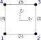

Reference shapes
The reference shapes in Ferrite are used to define grid cells, function interpolations (i.e. shape functions), and quadrature rules. Currently, the following reference shapes are defined
RefLineRefTriangleRefQuadrilateralRefTetrahedronRefHexahedronRefPrismRefPyramid
Entity naming
Ferrite denotes the entities of a reference shape as follows
| Entity | Description |
|---|---|
| Vertex | 0-dimensional entity in the reference shape. |
| Edge | 1-dimensional entity connecting two vertices. |
| Face | 2-dimensional entity enclosed by edges. |
| Volume | 3-dimensional entity enclosed by faces. |
Note that a node in Ferrite is not the same as a vertex. Vertices denote endpoints of edges, while nodes may also be located in the middle of edges (e.g. for a QuadraticLine cell).
To write dimensionally independent code, Ferrite also denotes entities by their codimension, defined relative the reference shape dimension. Specifically, Ferrite has the entities
| Entity | Description |
|---|---|
Cell | 0-codimensional entity, i.e. the same as the reference shape. |
Facet | 1-codimensional entity defining the boundary of cells. |
Standard use cases mostly deal with these codimensional entities, such as CellValues and FacetValues.
In Ferrite, codimension is defined relative to the reference dimension of the specific entity. Note that other finite element codes may define it differently (e.g. relative the highest reference dimension in the grid).
Entity numbering
Each reference shape defines the numbering of its vertices, edges, and faces entities, where the edge and face entities are defined from their vertex numbers.
The numbering and identification of entities is (mostly) for internal use and typically not something users of Ferrite need to interact with.
Example
The RefQuadrilateral is defined on the domain $[-1, 1] \times [-1, 1]$ in the local $\xi_1-\xi_2$ coordinate system.

The vertices of a RefQuadrilateral are then
Ferrite.reference_vertices(RefQuadrilateral)(1, 2, 3, 4)and its edges are then defined as
Ferrite.reference_edges(RefQuadrilateral)((1, 2), (2, 3), (3, 4), (4, 1))where the numbers refer to the vertex number. Finally, this reference shape is 2-dimensional, so it only has a single face, corresponding to the cell itself,
Ferrite.reference_faces(RefQuadrilateral)((1, 2, 3, 4),)also defined in terms of its vertices.
As this is a 2-dimensional reference shape, the facets are the edges, i.e.
Ferrite.reference_facets(RefQuadrilateral)((1, 2), (2, 3), (3, 4), (4, 1))The functions reference_vertices, reference_edges, reference_faces, and reference_facets are not public and only shown here to explain the numbering concept. The specific ordering may also change, and is therefore only documented in the Developer documentation.